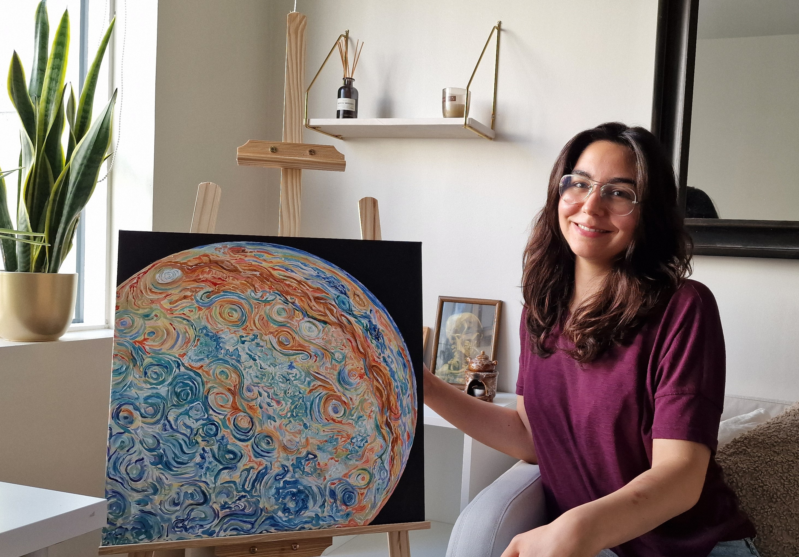

Sanatçı
Norveç'in Trondheim şehrinde yaşayan, aslen Ankara'lı bir sanatçıyım. Aynı zamanda bir bilim insanıyım ve biyoteknoloji alanında uzmanlaştım. Moleküler biyoloji ve genetik alanında lisans, biyoteknoloji alanında yüksek lisans ve doktora derecelerine sahibim.
Sanatım bilimden, doğadan, enerjiden ve spiritüel, mistik ve bilinç genişletici deneyimlerden ilham alıyor.
Çalışmalarımın amacı, izleyiciye insan deneyimi yaşayan ruhlar olduğumuzu hatırlatmaktır.
Benimle iletişim sayfası üzerinden iletişime geçebilir ve sanatla ilgili deneyiminizi paylaşabilirsiniz.
Bu web sitesini yavaş yavaş “vibe coding” yöntemiyle oluşturuyorum; yani yapay zeka kodlama sürecinde bana yardımcı oluyor. Siz de bir kullanıcı olarak siteyle ilgili geri bildirimlerinizi benimle paylaşırsanız, siteyi geliştirmemde bana yardımcı olursunuz.